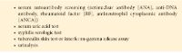

CHAPTER 13
Diagnosis and Management of Immune-Related Disorders of the Cornea and External Eye
This chapter includes a related video. Go to aao.org/bcscvideo_section08 or scan the QR code in the text to access this content.
Indicates selected key points within the chapter.
Definition
The Gell and Coombs classification divides hypersensitivity reactions into 4 types:
The modern classification divides the effector responses of adaptive immunity into 3 categories:
Despite this reclassification, the Gell and Coombs categories still appear in the literature and are mentioned in this chapter as well. See BCSC Section 9, Uveitis and Ocular Inflammation.
Immune-Mediated Diseases of the Eyelid
Contact Dermatoblepharitis
clinical presentation Topical ophthalmic medications, cosmetics, and environmental substances can occasionally trigger a local allergic reaction. An immediate hypersensitivity immunoglobulin (Ig) E–mediated (type I) reaction typically occurs within minutes after exposure to an allergen. Ocular reactions are associated with itching, eyelid erythema and swelling, conjunctival hyperemia, and chemosis (Fig 13-1). In rare cases, signs of systemic anaphylaxis may develop in the patient.
Lymphocyte-mediated delayed hypersensitivity (type IV) reactions typically begin 24–72 hours following instillation of the offending topical agent but may not occur until weeks or months of continual use. Patients are often sensitized by previous exposure to the offending drug or its preservative. An acute eczematous reaction develops with erythema, edema, and scaling of the eyelid (Fig 13-2). Sequelae of chronic contact blepharoconjunctivitis include hyperpigmentation, dermal scarring, and lower-eyelid ectropion. A papillary conjunctivitis associated with mucoid or mucopurulent discharge may develop. Inferior punctate epithelial erosions may be noted.
Contact blepharoconjunctivitis can be caused by medications and preservatives such as the following:
management Treatment of hypersensitivity reactions requires the identification and discontinuation of the offending agent. The history usually provides the necessary clues, but sometimes a challenge test is necessary to confirm a suspicion. Such tests should never be done in patients with a known systemic allergy to a drug.
Immediate hypersensitivity reactions are initially managed by allergen avoidance or discontinuation of the causative agent. Adjunctive therapy may involve the use of cold compresses, artificial lubricants, topical antihistamines, and mast cell stabilizers. Topical vasoconstrictors, either alone or in combination with antihistamines, may provide acute symptomatic relief, but long-term use is not recommended.
Delayed hypersensitivity reactions are also treated with allergen withdrawal. In severe cases, a several-day course of topical corticosteroids, tacrolimus ointment (0.03%), or pimecrolimus cream (1.0%; off-label use) applied to the eyelids and periocular skin may speed resolution of eyelid and conjunctival inflammation.
Atopic Dermatitis
clinical presentation Atopic dermatitis is a chronic condition in genetically susceptible individuals that usually begins in infancy or childhood and may or may not involve the external eye. Patients report marked itching and eczematous lesions on the eyelids and other sites (eg, joint flexures in adolescents and adults, face and extensor surfaces in infants and young children) (Fig 13-3). Affected patients usually have a personal or family history of atopic disorders, such as asthma, allergic rhinitis, nasal polyps, and aspirin hypersensitivity.
Ocular findings include periorbital darkening of the skin, exaggerated eyelid folds, meibomianitis, ectropion, and chronic papillary conjunctivitis. The appearance of the skin lesions varies depending on the age of the patient. Infants typically have an erythematous rash, children tend to have eczematous dermatitis with secondary lichenification from scratching, and adults have scaly patches with thickened and wrinkled dry skin.
Delves PJ, Martin SJ, Burton DR, Roitt IM. Roitt’s Essential Immunology. 13th ed. Wiley-Blackwell; 2017.
Langan SM, Irvine AD, Weidinger S. Atopic dermatitis. Lancet. 2020;396(10247):345–360.
pathogenesis The pathogenesis of atopic dermatitis involves a delayed hypersensitivity reaction and impaired cell-mediated immunity. In addition, there is an increase both in IgE hypersensitivity and in histamine release from mast cells and basophils.
management It is important to identify and minimize allergens in the environment and in foods whenever possible. In general, it is advisable to consult with an allergist. Moisturizing lotions, creams, and petrolatum gels can be useful for skin hydration. Skin lesions can be controlled with a topical corticosteroid cream or ointment, beginning with a mild agent (hydrocortisone 1.0%, desonide 0.05%) and progressing to a stronger agent (clobetasone butyrate 0.05%); however, long-term use of topical steroids is discouraged to avoid skin thinning. Tacrolimus ointment (0.03% or 0.1% for adults; 0.03% for children aged 2 to 15 years) and pimecrolimus cream 1.0% are effective for topical skin application and have fewer adverse effects than do topical steroids. Oral antipruritic agents such as antihistamines and mast cell stabilizers can alleviate itching but may exacerbate dry eye symptoms secondary to anticholinergic activity. Dupilumab, an inhibitor of interleukins 4 and 13, is an effective biologic treatment for atopic dermatitis. However, this treatment can induce mild to severe keratoconjunctivitis, blepharitis, and meibomian gland dysfunction and in severe cases may cause cicatrizing conjunctivitis. Treatment for dupilumab-associated blepharoconjunctivitis consists of topical and oral corticosteroids, lubrication, eyelid hygiene, and warm compresses. Topical ocular administration of immunomodulators such as cyclosporine and tacrolimus (off-label use) can also be helpful.
Maudinet A, Law-Koune S, Duretz C, Lasek A, Modiano P, Tran THC. Ocular surface diseases induced by dupilumab in severe atopic dermatitis. Ophthalmol Ther. 2019;8(3):485–490.
Mickevicius T, Pink AE, Bhogal M, O’Brart D, Robbie SJ. Dupilumab-induced, tralokinumab-induced, and belantamab mafodotin–induced adverse ocular events—incidence, etiology, and management. Cornea. 2023;42(4):507–519.
Immune-Mediated Disorders of the Conjunctiva
Seasonal Allergic Conjunctivitis and Perennial Allergic Conjunctivitis
clinical presentation Seasonal allergic conjunctivitis (SAC) can develop rapidly after airborne exposure to pollen, usually in spring and summer. Symptoms consist of itching (SAC hallmark), eyelid swelling, conjunctival hyperemia, chemosis, and mucoid discharge. Attacks are usually short-lived and episodic. Affected individuals often have other atopic conditions, such as allergic rhinitis, asthma, and eczema (atopic dermatitis). Perennial allergic conjunctivitis (PAC) has a similar but milder presentation that can last year-round and is triggered by exposure to allergens like dust, occupational substances (eg, adhesives, metals, paints, latex), mites, molds, and animal dander.
Cheung AY, Choi DS, Ahmad S, et al; American Academy of Ophthalmology Preferred Practice Pattern Cornea/External Disease Panel. Conjunctivitis Preferred Practice Pattern. Ophthalmology. 2023;131(4):P134–P204. doi:10.1016/j.ophtha.2023.12.037
Dupuis P, Prokopich CL, Hynes A, Kim H. A contemporary look at allergic conjunctivitis. Allergy Asthma Clin Immunol. 2020 Jan 21;16:5. doi:10.1186/s13223-020-0403-9
Ueta M, Kinoshita S. Ocular surface inflammation is regulated by innate immunity. Prog Retin Eye Res. 2012;31(6):551–575.
pathogenesis SAC and PAC are largely IgE-mediated hypersensitivity reactions. The allergen, which is typically airborne, enters the tear film and comes into contact with allergen-specific IgE bound to conjunctival mast cells. Degranulation of mast cells releases histamine and other inflammatory mediators that cause itching, vasodilation, and edema in the acute phase. Additional mediators signal recruitment of inflammatory cells, such as eosinophils in late-phase disease. In a presensitized individual, the activation and degranulation of mast cells can be triggered within minutes of allergen exposure.
laboratory evaluation The diagnosis of SAC is generally made through a careful patient history combined with the clinical signs and symptoms. Skin testing with a panel of allergens may be helpful in directing treatment.
management Efforts are first directed at avoidance or elimination of the allergen. Thorough cleaning or replacing carpets, linens, and bedding in the patient’s home can be effective in removing accumulated allergens, such as animal dander and dust mites. Having the patient shower and change clothing after exposure to allergens can also be helpful. It is important to identify contributing factors, including contact lenses and dry eye disease, because they can play an important role in facilitating allergen contact with the ocular surface. Glasses or goggles can serve as physical barriers. Treatment is based on the severity of patient symptoms and includes 1 or more of the following:
Artificial tears act as a physical barrier to protect the ocular surface and carry away allergens and other inflammatory mediators. Topical vasoconstrictors, alone or in combination with antihistamines, may provide acute symptom relief for redness. However, their use for more than 5–7 consecutive days may predispose the patient’s eyes to a rebound effect of vascular dilation and persistent redness. Topical mast cell–stabilizing agents are useful in treating SAC (Table 13-1). Oral antihistamines can provide symptom relief in the short term but may be associated with an increase in dry eye.
If the offending allergen has been identified by skin testing, desensitization injections (allergen-specific immunotherapy) can be beneficial. Certain topical NSAIDs have been approved by the US Food and Drug Administration (FDA) for use in cases of ocular atopy, but their efficacy varies greatly. Moreover, reports of corneal perforations with the use of topical NSAIDs, especially the generic forms, suggest the need for careful monitoring. Topical corticosteroids are very effective in managing ocular allergy; however, they are typically reserved for cases unresponsive to other treatments and must be used with caution. If corticosteroids are prescribed, patients must be clearly informed of the associated risks and closely monitored for adverse effects. See BCSC Section 2, Fundamentals and Principles of Ophthalmology, for a discussion of topical antihistamines and mast cell stabilizers.
Berdy GJ, Leonardi A, Abelson MB. Antihistamines and mast cell stabilizers in
allergic ocular disease. In: Albert DM, Miller JW, Azar DT, Blodi BA, eds. Albert & Jakobiec’s Principles and Practice of Ophthalmology. 3rd ed. Saunders/Elsevier; 2008:265–279.
Castillo M, Scott NW, Mustafa MZ, Mustafa MS, Azuara-Blanco A. Topical antihistamines
and mast cell stabilisers for treating seasonal and perennial allergic conjunctivitis. Cochrane Database Syst Rev. 2015;6:CD009566. doi:10.1002/14651858.CD009566.pub2
Vernal Keratoconjunctivitis
clinical presentation Vernal keratoconjunctivitis (VKC) is a seasonally recurring, bilateral inflammation of the cornea and conjunctiva that occurs predominantly in children to young adults, with a 2:1 male predominance. Frequently, patients have a personal or family history of atopy that includes allergic rhinitis, asthma, or eczema. The disease may persist year-round in severe cases. Symptoms consist of itching, photophobia, blurred vision, and copious mucoid discharge. There are 2 forms of VKC:
Corneal changes observed in VKC include punctate epithelial erosions in the superior and central cornea and pannus formation in the superior cornea. In severe cases, peripheral corneal vascularization may develop. Oval-shaped noninfectious ulcers, called shield ulcers, may form in the superior or central cornea as a result of constant rubbing of superior tarsal giant papillae against the corneal epithelium, as well as secretion of cytotoxic agents (major basic protein and eosinophilic cationic protein) by eosinophils (Fig 13-6). The secreted proteins form a dense plaque on the denuded stroma, inhibiting epithelialization. In severe cases, stem cell deficiency may also occur. An association between VKC and keratoconus has been reported.
Berdy GJ, Berdy SS. Ocular allergic diseases. In: Joo S, Kau LK, eds. The Washington Manual Allergy, Asthma, and Immunology Subspecialty Consult. 2nd ed. Wolters Kluwer/Lippincott, Williams & Wilkins; 2013:89–95.
Nehls SM. Vernal and atopic keratoconjunctivitis. In: Mannis MJ, Holland EJ, eds. Fundamentals, Diagnosis and Management. 5th ed. Elsevier; 2022:413–420. Cornea; vol 1.
Singhal D, Sahay P, Maharana PK, Raj N, Sharma N, Titiyal JS. Vernal keratoconjunctivitis. Surv Ophthalmol. 2019;64(3):289–311.
Solomon A. Corneal complications of vernal keratoconjunctivitis. Curr Opin Allergy Clin Immunol. 2015;15(5):489–494.
pathogenesis Both IgE-mediated and lymphocyte-mediated hypersensitivity reactions are involved. The conjunctival inflammatory infiltrate in VKC consists of eosinophils, lymphocytes, plasma cells, and monocytes.
management Therapy is based on the severity of the patient’s symptoms and the ocular surface disease. Mild cases are typically managed successfully with topical antihistamines. Environmental control may be helpful; home air-conditioning systems can filter and decrease exposure to the offending antigen. Mild to moderate disease may be responsive to topical mast cell stabilizers; in patients with seasonal exacerbations, these drops are typically started in the month before symptoms usually begin. Year-round disease may require long-term maintenance dosing.
Severe cases may require the use of topical corticosteroids. Because of the possibility of corticosteroid-related complications from long-term administration, these agents are typically reserved for exacerbations that result in moderate to severe discomfort and/or decreased vision. If a topical steroid is used, fluorometholone may be preferred; the risk of intraocular pressure (IOP) elevation is lower with this drug than with prednisolone, because the former does not penetrate well into the anterior chamber. During exacerbations, intermittent (pulse) therapy can be very effective. Topical corticosteroids can be used relatively frequently (eg, every 2 hours) for 5–7 days and then tapered for maintenance to 2 or 3 times daily during the allergy season. The use of corticosteroid ointment at bedtime may be effective. Whenever corticosteroids are prescribed, it is critical to inform the patient of the adverse effects of long-term topical corticosteroid use and emphasize the importance of close follow-up.
In cooperative patients with severe VKC, supratarsal injection of corticosteroid is an alternative to topical delivery. The supratarsal subconjunctival space is located superior to the upper border of the superior tarsus and is most easily reached by everting the upper eyelid. After application of topical anesthesia, a supratarsal injection of 0.5–1.0 mL of either a relatively short-acting corticosteroid such as dexamethasone phosphate (4 mg/mL) or a longer-acting corticosteroid such as triamcinolone acetonide (40 mg/mL) can be performed. Close monitoring of IOP is critical.
Steroid-sparing agents have been shown to be effective. Topical cyclosporine 0.1% is approved for treatment of VKC; other concentrations can be used 2–4 times daily in an off-label fashion. Adverse effects of cyclosporine include punctate epithelial keratopathy and ocular surface irritation. Topical tacrolimus ointment 0.03% or 0.1% can be applied to the eyelid and/or conjunctival cul-de-sac once to twice daily (off-label use) to treat refractory cases of VKC. Systemic anti-inflammatory therapy with oral prednisone given in a pulsed fashion can be helpful and is reserved for the most severe cases. Collaboration with an allergist is recommended.
Nonhealing shield ulcers can be treated by peeling or wiping of the corneal plaque followed by topical steroid and antibiotic drops (Video 13-1). A bandage contact lens may be applied. Use of an amniotic membrane graft has been reported in severe cases.
VIDEO 13-1 Surgical treatment of shield ulcer.
Courtesy of Denise Wajnsztajn, MD; David Kohn, MD; Abraham
Solomon, MD; and Joseph Frucht-Pery, MD.
Available at: aao.org/bcscvideo_section08
Hazarika AK, Singh PK. Efficacy of topical application of 0.03% tacrolimus eye ointment in the management of allergic conjunctivitis. J Nat Sci Biol Med. 2015;6(Suppl 1):S10–S12.
Pucci N, Caputo R, di Grande L, et al. Tacrolimus vs. cyclosporine eyedrops in severe cyclosporine-resistant vernal keratoconjunctivitis: a randomized, comparative, double-blind, crossover study. Pediatr Allergy Immunol. 2015;26(3):256–261.
Atopic Keratoconjunctivitis
clinical presentation The ocular findings in atopic keratoconjunctivitis (AKC) are similar to those in VKC; Table 13-2 summarizes the differences. Specific findings in AKC include the following:
Brémond-Gignac D, Nischal KK, Mortemousque B, Gajdosova E, Granet DB, Chiambaretta F. Atopic keratoconjunctivitis in children: clinical features and diagnosis. Ophthalmology. 2016;123(2):435–437.
Chen JJ, Applebaum DS, Sun GS, Pflugfelder SC. Atopic keratoconjunctivitis: a review. J Am Acad Dermatol. 2014;70(3):569–575.
pathogenesis The immunopathology of AKC combines IgE-mediated and lymphocyte-mediated reactions. One or more manifestations of AKC develop in approximately one-third of patients with atopic dermatitis. Atopic individuals demonstrate depressed systemic cell-mediated immunity. This altered immune status increases susceptibility to herpes simplex virus keratitis and colonization of the eyelids with Staphylococcus aureus.
management AKC treatment involves allergen avoidance; cold compresses may also be of benefit. The use of pharmacotherapeutic agents similar to those used in the treatment of VKC is helpful. Just as in VKC, topical tacrolimus ointment 0.03% or 0.1% can be applied once to twice daily (off-label use), and topical cyclosporine 0.05% to 2.0% 2–4 times daily can assist in limiting the topical corticosteroid required to control the inflammation. Patients should be advised about the potential for ocular burning and itching with topical tacrolimus use. Topical calcineurin inhibitors such as tacrolimus may be associated with an increased risk of lymphoma, although the absolute risk is low and long-term large-scale studies are lacking. It is important to carefully monitor patients for infectious diseases that may warrant specific therapy, such as secondary staphylococcal infections and herpes simplex keratitis (see Chapters 11 and 12).
In severe cases, the indications for systemic therapy include chronic ocular surface inflammation unresponsive to topical treatment, ocular discomfort, progressive cicatrization, and peripheral ulcerative keratopathy. It is important to monitor the degree of systemic immunosuppression in coordination with an internist or rheumatologist.
Erdinest N, Solomon A. Topical immunomodulators in the management of allergic eye disease. Cur Opin Allergy Clin Immunol. 2014;14(5):457–463.
García DP, Alperte JI, Cristóbal JA, et al. Topical tacrolimus ointment for treatment of intractable atopic keratoconjunctivitis: a case report and review of the literature. Cornea. 2011;30(4):462–465.
Lam M, Zhu JW, Tadrous M, Drucker AM. Association between topical calcineurin inhibitor use and risk of cancer, including lymphoma, keratinocyte carcinoma, and melanoma: a systematic review and meta-analysis. JAMA Dermatol. 2021;157(5):549–558
Ligneous Conjunctivitis
clinical presentation Ligneous conjunctivitis is a rare, chronic autosomal recessive disorder characterized by the formation of firm woodlike, yellowish fibrinous membranes on the conjunctival surface (Fig 13-9). Patients present with symptoms of ocular irritation and foreign-body sensation. The cardinal finding consists of yellowish, platelike masses that overlie 1 or more of the palpebral surfaces and are readily visible with eversion of the eyelid. Ligneous conjunctivitis is generally bilateral and can affect individuals of all ages.
Neff KD, Holland EJ, Schwartz GS. Ligneous conjunctivitis. In: Mannis MJ, Holland EJ, eds. Fundamentals, Diagnosis and Management. 5th ed. Elsevier; 2022:465–470. Cornea; vol 1.
pathogenesis Ligneous conjunctivitis has been linked to severe plasminogen deficiency type 1 (hypoplasminogenemia), with decreased fibrinolysis as the primary defect. More than 12% of patients with ligneous conjunctivitis have severe hypoplasminogenemia. The genetic defect in the plasminogen gene (PLG) is located at band 6q26. The membranes are composed of fibrin, fibrin-bound tissue plasminogen activator (tPA), epithelial cells, and inflammatory cells that adhere to the conjunctival surface. In patients with hypoplasminogenemia, these fibrin-rich membranes may also develop on the mucosal surfaces of the mouth, oropharynx, trachea, and urogenital tract. Latent and activated forms of matrix metalloproteinase-9 (MMP-9) have also been identified.
management Cultures can be taken at initial diagnosis to exclude a bacterial or viral pseudomembranous or membranous conjunctivitis. A complete surgical excision is typically combined with topical and systemic medical treatment. Amniotic membrane transplantation has been reported in some cases.
Topical treatment includes all of the following:
Intravenous (IV) treatment includes
Ryplazim (plasminogen, human-tvmh; Kedrion Biopharma Inc) is an IV treatment approved by the FDA for plasminogen deficiency type 1. Recurrences are frequent and may require close follow-up and repeated excisions. In patients with hypoplasminogenemia, endotracheal intubation is potentially dangerous, as trauma to mucosal surfaces may trigger formation of membranous lesions, leading to airway obstruction. Many cases of ligneous conjunctivitis resolve spontaneously after several months to a few years.
Hiremath M, Elder J, Newall F, Mitchell S, Dyas R, Monagle P. Heparin in the long-term management of ligneous conjunctivitis: a case report and review of literature. Blood Coagul Fibrinolysis. 2011;22(7):606–609.
Ku JYF, Lichtinger A, Yeung SN, Kim P, Cserti-Gazdewich C, Slomovic AR. Topical fresh frozen plasma and heparin treatment of ligneous conjunctivitis in a Canadian hospital setting. Can J Ophthalmol. 2012;47(5):e27–e28.
Stevens-Johnson Syndrome, Stevens-Johnson Syndrome/Toxic Epidermal Necrolysis Overlap, and Toxic Epidermal Necrolysis
Stevens-Johnson syndrome (SJS), SJS/toxic epidermal necrolysis (SJS/TEN) overlap, and TEN are acute inflammatory, vesiculobullous reactions involving the skin and at least 2 mucous membranes. The conjunctiva and oropharynx are the tissues most frequently involved. In this chapter, the term SJS–TEN is used to refer collectively to SJS, SJS/TEN overlap, and TEN. The current nomenclature is based on the amount of skin involvement:
The reported incidence of SJS ranges from 1.2 to 6 per million patient-years, and the reported incidence of TEN ranges from 0.4 to 1.2 per million patient-years. The incidence increases with advancing age, and patients with HIV infection and malignancy may be at higher risk. Reported mortality rates range from 1% to 5% in SJS and 25% to 35% in TEN.
Jain R, Sharma N, Basu S, et al. Stevens-Johnson syndrome: the role of an ophthalmologist. Surv Ophthalmol. 2016;61(4):369–399.
clinical presentation Prodromal fever, arthralgia, malaise, and upper or lower respiratory tract symptoms develop first and are usually sudden in onset. Skin eruption follows within a few days, with a classic “target” lesion consisting of a red center surrounded by a pale ring and then a red ring. Maculopapular and bullous skin lesions are also common. The mucous membranes of the eyes, mouth, and genitalia may be affected by bullous lesions with membrane or pseudomembrane formation. New lesions may appear over 4–6 weeks, with approximately 2-week cycles for each crop of lesions.
In the acute phase, ocular findings may range from conjunctival hyperemia and punctate keratopathy in more mild cases, to epithelial sloughing of the cornea, conjunctiva, and eyelid margin in severe cases (Fig 13-10). Patients are at risk of infection because of loss of the epithelial barrier.
Between 30% and 50% of patients with SJS–TEN develop long-term ocular complications, including ocular surface cicatrization with formation of conjunctival symblepharon and forniceal shortening (Fig 13-11), eyelid margin keratinization, eyelid malposition (lagophthalmos, entropion, ectropion), trichiasis, and dry eye. Limbal stem cell deficiency may result in persistent epithelial defects, corneal neovascularization and conjunctivalization, corneal scarring and ulceration, and severe vision loss. Eyelid margin keratinization and scarring are important risk factors for poor long-term visual outcomes not only in patients with SJS–TEN but in any patient.
Catt CJ, Hamilton GM, Fish J, Mireskandari K, Ali A. Ocular manifestations of Stevens-Johnson syndrome and toxic epidermal necrolysis in children. Am J Ophthalmol. 2016;166:68–75.
Gerull R, Nelle M, Schaible T. Toxic epidermal necrolysis and Stevens-Johnson syndrome: a review. Crit Care Med. 2011;39(6):1521–1532.
Saeed HN, Chodosh J. Ocular manifestations of Stevens-Johnson syndrome and their management. Curr Opin Ophthalmol. 2016;27(6):522–529.
pathogenesis Approximately 80% of TEN cases and 50%–80% of SJS cases are thought to be drug induced, most frequently by the following medications:
The remaining SJS–TEN cases are attributed to diseases caused by infection with organisms such as the following:
In the acute phase, a delayed-type (type IV) hypersensitivity reaction usually occurs 4–28 days after exposure to the inciting agent. Antigen-mediated T-cell activation leads to release of cytotoxic proteins, resulting in widespread keratinocyte apoptosis. Chronic ocular disease results from damage to the ocular surface and eyelids.
Jun I, Rim JH, Kim MK, et al. Association of human antigen class I genes with cold medicine–related Stevens-Johnson syndrome with severe ocular complications in a
Korean population. Br J Ophthalmol. 2019;103(4):573–576.
management Acute SJS–TEN is a medical emergency associated with significant risk of morbidity and mortality. Management requires a team-based approach, similar to that used for thermal burn victims, and includes the critical care physician, anesthesiologist, burn surgeon, dermatologist, and ophthalmologist. The offending agent must be immediately discontinued. Systemic therapy is mainly supportive and is aimed at managing dehydration and superinfection. Systemic treatment with immunosuppressive agents, immunomodulatory agents, or IV immunoglobulins remains equivocal.
In the acute phase of SJS–TEN, ocular therapy should be focused on lubrication, infection prophylaxis, and control of ocular surface inflammation (Fig 13-12). Vigilant surveillance with daily examinations during the initial phase is necessary to monitor for early manifestations of ocular infection or epithelial defects. Management of the ophthalmic manifestations of acute SJS–TEN includes the following:
Significant long-term benefit, including improved visual acuity outcome, has been demonstrated when amniotic membrane grafting is performed within the first 3 to 7 days of onset of SJS–TEN. Amniotic membrane should be applied when any epithelial defect of the cornea, conjunctiva, or eyelid margin is present. If there is involvement of the palpebral conjunctiva and/or eyelid margin, the entire ocular surface, including the eyelid margins, should be covered with amniotic membrane. Various techniques can be used, and the procedure can be done in the operating room or at the bedside for patients who cannot be taken to the operating room immediately.
Management of chronic SJS–TEN is targeted at rehabilitation of visual function and treatment of the resultant dry eye and the mechanical abnormalities of the eyelids and eyelashes, which can cause ocular surface trauma and inflammation.
Dry eye is a significant problem secondary to scarring of the ocular surface and damage to the meibomian and accessory lacrimal glands. Conjunctival scarring can also affect lacrimal gland function. Treatment of dry eye includes lubrication with preservative-free drops and ointments, punctal occlusion, and eyelid hygiene. Topical and systemic corticosteroids have been reported to help reduce active inflammation but must be used with caution. Depending on the extent of the chronic disease, other treatment options include debridement of keratin from eyelid margins, use of bandage contact lenses or scleral lenses, and mucous membrane grafting. See Chapter 3 for discussion of dry eye.
In patients with chronic disease, vision rehabilitation is challenging and can be high risk. Scleral contact lenses may improve patient comfort and vision and help some patients avoid surgery. Surgical treatments are risky and are generally avoided unless there are no other options. Living donor or cadaveric limbal stem cell transplantation and cultivated oral and nasal mucosal epithelial transplantation have been performed but are less successful in cases of extreme dry eye. Penetrating keratoplasty is associated with an extremely poor prognosis in patients with chronic disease and is generally reserved for eyes with progressive thinning or perforation. In severe cases, favorable results have been achieved with a keratoprosthesis, but success may be limited in patients with severe dry eye. Unfortunately, many patients with chronic SJS–TEN are young and will experience lifelong ocular morbidity. Rehabilitation is hindered not only by sequelae of the acute disease, but also by ongoing, chronic immunopathology of the ocular surface.
Basu S, Shanbhag SS, Gokani A, Kedar R, Bahuguna C, Sangwan VS. Chronic ocular sequelae of Stevens-Johnson syndrome in children: long-term impact of appropriate therapy on natural history of disease. Am J Ophthalmol. 2018;189:17–28.
Gregory, DG. New grading system and treatment guidelines for the acute ocular manifestations of Stevens-Johnson syndrome. Ophthalmology. 2016;123(8):1653–1658.
Gregory DG. The ophthalmologic management of acute Stevens-Johnson syndrome. Ocul Surf. 2008;6(2):87–95.
Kohanim S, Palioura S, Saeed HN, et al. Stevens-Johnson syndrome/toxic epidermal necrolysis—a comprehensive review and guide to therapy. II. Ophthalmic disease. Ocul Surf. 2016;14(2):168–188.
Shanbhag SS, Chodosh J, Saeed HN. Sutureless amniotic membrane transplantation with cyanoacrylate glue for acute Stevens-Johnson syndrome/toxic epidermal necrolysis. Ocul Surf. 2019;17(3):560–564.
Shanbhag SS, Rashad R, Chodosh J, Saeed HN. Long-term effect of a treatment protocol for acute ocular involvement in Stevens-Johnson Syndrome/toxic epidermal necrolysis. Am J Ophthalmol. 2019;208:331–341.
Mucous Membrane Pemphigoid
clinical presentation Mucous membrane pemphigoid (MMP), formerly called ocular cicatricial pemphigoid, is a chronic, cicatrizing conjunctivitis of autoimmune etiology. It is a vesiculobullous disease that may affect other mucous membranes, including those of the mouth, oropharynx, genitalia, and anus. Difficulty swallowing may be an important early symptom. Skin involvement can occur in some cases.
Patients with MMP are usually older than 60 years at the time of diagnosis. They often present with recurrent attacks of mild and nonspecific conjunctival inflammation with an occasional mucopurulent discharge. Patients with MMP may initially present with trichiasis; the need for repeated epilation may be indicative of MMP. It is important to examine such patients for fibrosis of the palpebral conjunctiva, which is an early sign of MMP, or symblephara and forniceal shortening, which are signs of more advanced disease. Although MMP is a bilateral disease, 1 eye may be more severely involved than the other.
The Foster staging system divides MMP severity into 4 stages:
It is important to diagnose MMP in its early stages. In many cases, the disease initially produces nonspecific symptoms with minimal overt physical findings, such as chronic red eye. Fine white linear opacities may appear on the palpebral conjunctiva, indicative of subepithelial fibrosis (see Fig 13-13). Abnormal shortening of the inferior fornix warrants further evaluation. A subtle inferior symblepharon can be detected when the lower eyelid is pulled down while the patient looks up (see Fig 13-15). Oral mucosal lesions may be a clue that can lead to early diagnosis.
Recurrent attacks of conjunctival inflammation can lead to destruction of goblet cells and eventually obstruction of the lacrimal gland orifices. The resultant aqueous and mucous tear deficiency leads to keratinization of the conjunctiva. Entropion and trichiasis may develop as scarring progresses, leading to corneal abrasions, vascularization (Fig 13-17), additional scarring, ulceration, and epidermalization of the ocular surface. Corneal abrasions in these patients are emergencies and must be treated immediately to minimize progression to ulceration, perforation, scarring, and ankyloblepharon formation (see Fig 13-16). Although the clinical course varies, progressive deterioration usually occurs in untreated cases. Remissions and exacerbations are common. Surgical intervention can incite further scarring but may be essential in the management of entropion and trichiasis.
The differential diagnosis of cicatrizing conjunctivitis includes 4 major categories (Table 13-3). The diagnosis of unilateral MMP should be made with caution because other diseases, including many of those listed in Table 13-3, may masquerade as MMP.
Pseudopemphigoid, which has a clinical picture similar to that of MMP, has been associated with the long-term use of certain topical ophthalmic medications (eg, pilocarpine, epinephrine, timolol, idoxuridine). The main difference between pseudopemphigoid and true pemphigoid is that in pseudopemphigoid, disease progression generally ceases once the offending agent is removed.
Daluvoy MB, Valenzuela FA, Perez VL. Mucous membrane pemphigoid. In: Mannis MJ, Holland EJ, eds. Fundamentals, Diagnosis and Management. 5th ed. Elsevier; 2022:427–434. Cornea; vol 1.
Srikumaran D, Tzu JH, Akpek EK. Cicatrizing conjunctivitis. Focal Points: Clinical Modules for Ophthalmologists. American Academy of Ophthalmology; 2011, module 1.
pathogenesis The underlying cause of MMP is not completely clear. An impaired immune response leads to production of autoantibodies against adhesion molecules in the hemidesmosome–epithelial basement membrane complex. Activation of complement proteins and overexpression of proinflammatory cytokines lead to conjunctival membrane breakdown, fibroblast stimulation, collagen production, and fibrosis.
Williams GP, Radford C, Nightingale P, Dart JKG, Rauz S. Evaluation of early and late presentation of patients with ocular mucous membrane pemphigoid to two major tertiary referral hospitals in the United Kingdom. Eye (Lond). 2011;25(9):1207–1218.
laboratory evaluation A diagnosis of pemphigoid can be confirmed with direct immunofluorescence or immunoperoxidase staining of conjunctival biopsy specimens. The success rate of pathology laboratories in diagnosing MMP varies considerably; thus, it is important to use a laboratory that specializes in dermatopathology.
Biopsy specimens are obtained from the junction between unaffected and actively affected areas of the conjunctiva or, when involvement is diffuse, from the inferior conjunctival fornix. There is a risk of worsening forniceal shortening after conjunctival biopsy. Oral mucosal biopsies may be useful, especially in the presence of an active lesion. Immunohistochemical staining techniques can demonstrate complement 3, IgG, IgM, and/or IgA localized in the epithelial basement membrane of the conjunctiva in pemphigoid (Fig 13-18). Circulating anti–basement membrane antibody has been identified in some patients with pemphigoid. End-stage disease may produce negative results because of the destruction of basement membrane.
The diagnosis of MMP and the decision to treat it are made on the basis of clinical findings, even when biopsy results are negative. However, a positive biopsy result can be important when the risks of systemic immunosuppression are being weighed. (See also BCSC Section 4, )
Radford CF, Rauz S, Williams GP, Saw VPJ, Dart JKG. Incidence, presenting features, and diagnosis of cicatrizing conjunctivitis in the United Kingdom. Eye (Lond). 2012;26(9):1199–1208.
management The management of MMP requires a multidisciplinary approach. Collaboration with a rheumatologist or dermatologist experienced in administering systemic immunosuppressive treatment is recommended to maximize patient outcome. Classifying patients according to their risk for disease progression (low or high) is valuable when appropriate therapy is being determined. Because progression is often slow, careful clinical staging of the disease and photo documentation (with the patient in different positions of gaze) are generally recommended in evaluation of the disease course and response to therapy.
It is important to remember that MMP is a systemic disease requiring systemic therapy. Topical treatments (steroids, cyclosporine, tacrolimus) may help alleviate symptoms but will not prevent disease progression. Oral corticosteroids can help reduce inflammation in the short run until agents used to achieve long-term immunosuppression take effect. Systemic immunomodulatory medication regimens depend on disease severity and whether sight-threatening complications are present (see BCSC Section 9, Uveitis and Ocular Inflammation).
Patients are treated for a few months to several years until inflammation subsides (see Fig 13-17B). Blepharitis is treated with eyelid hygiene and daily oral doxycycline.
Any procedure or surgery (eyelid or intraocular) can cause the disease to flare; the patient can be supported with adequate immunosuppressive therapy as necessary. Surgical correction of eyelid deformities or treatment of trichiasis is important. In severe cases, hard palate and buccal mucosal grafting can be useful techniques in fornix reconstruction. Punctal occlusion, which may have already resulted from cicatrization, can be useful in the management of any associated dry eye condition. Because patients with cicatrizing conjunctivitis have a higher rate of spontaneous extrusion of silicone punctal plugs, permanent punctal occlusion with cautery is often required. Standard penetrating keratoplasty in MMP patients with severe corneal disease carries a guarded prognosis. In patients who become blind due to MMP, keratoprosthesis surgery, performed as a last resort, has achieved greater success in the absence of severe dry eye.
Foster CS, Chang PY, Ahmed AR. Combination of rituximab and intravenous immunoglobulin for recalcitrant ocular cicatricial pemphigoid: a preliminary report. Ophthalmology. 2010;117(5):861–869.
Friedman J, Marcovich AL, Kleinmann G, Schattner A. Low-dose pulsed intravenous cyclophosphamide for severe ocular cicatricial pemphigoid in elderly patients. Cornea. 2014;33(10):1066–1070.
Georgoudis P, Sabatino F, Szentmary N, et al. Ocular mucous membrane pemphigoid: current state of pathophysiology, diagnostics and treatment. Ophthalmol Ther. 2019;8(1):5–17.
Queisi MM, Zein M, Lamba N, Meese H, Foster CS. Update on ocular cicatricial pemphigoid and emerging treatments. Surv Ophthalmol. 2016;61(3):314–317.
Ocular Graft-vs-Host Disease
Graft-vs-host disease (GVHD) is a relatively common complication of allogeneic bone marrow transplantation, which is performed most commonly for hematopoietic malignancies. GVHD is categorized into acute and chronic GVHD. Acute GVHD usually develops within 100 days of transplant and primarily affects 3 target organs: skin, liver, and gastrointestinal tract. Chronic GVHD can affect not only these 3 organs, but also the eyes, nails, body hair, lungs, musculoskeletal system, and genitals. Chronic GVHD usually develops at least 100 days after transplant. Ocular involvement occurs in 40%–60% of patients with chronic GVHD.
clinical presentation The clinical features of ocular GVHD mirror those of other ocular inflammatory conditions associated with autoimmune disease. Severe dry eye and ocular surface inflammation are the 2 main components of ocular GVHD. A wide array of pathologic features can be present, including the following:
pathogenesis In GVHD, the grafted immune cells, in particular T cells, mount an immunologic response against the recipient’s histocompatibility antigens across multiple organ systems.
Carreno-Galeano JT, Dohlman TH, Kim S, Yin J, Dana R. A review of ocular graft-versus-host disease: pathophysiology, clinical presentation and management. Ocul Immunol Inflamm. 2021;29(6):1190–1199.
Jagasia MH, Greinix HT, Arora M, et al. National Institutes of Health Consensus Development Project on Criteria for Clinical Trials in Chronic Graft-versus-Host Disease: I. The 2014 Diagnosis and Staging Working Group report. Biol Blood Marrow Transplant. 2015;21(3):389–401.
Shikari H, Antin JH, Dana R. Ocular graft-versus-host disease: a review. Surv Ophthalmol. 2013;58(3):233–251.
Soleimani M, Mahdavi Sharif P, Cheraqpour K, et al. Ocular graft-versus-host disease (oGVHD): from A to Z. Surv Ophthalmol. 2023;68(4):697–712.
management The mainstays of local therapy are aggressive ocular lubrication and control of ocular surface inflammation. Punctal occlusion is helpful, although punctal fibrosis is common and can lead to plug extrusion. Autologous serum tears may be helpful in improving the ocular surface. Topical steroids are often necessary when inflammation is significant. Steroid-sparing treatment options include topical cyclosporine and tacrolimus (off-label use).
Filamentary keratitis can be treated with a topical mucolytic agent such as acetylcysteine 10% or a bandage contact lens. For persistent epithelial defects, amniotic membrane can be used. To treat significant eyelid margin inflammation, oral doxycycline may be helpful. If ocular GVHD is uncontrolled despite aggressive local therapy, it is important to communicate with the hematologist or oncologist, as escalation in the systemic immunosuppressive regimen may be needed. Visual disturbances are typically due to surface irregularity; however, patients also have a high rate of posterior subcapsular cataract. For patients with severe ocular surface disease, scleral contact lenses and therapeutic soft contact lenses can be helpful (Fig 13-19). Severe GVHD may require systemic immunosuppressive therapy in consultation with the treating hematologist or oncologist.
Abud TB, Amparo F, Saboo US, et al. A clinical trial comparing the safety and efficacy of topical tacrolimus versus methylprednisolone in ocular graft-versus-host disease. Ophthalmology. 2016;123(7):1449–1457.
DeLoss KS, Le HG, Gire A, Chiu GB, Jacobs DS, Carrasquillo KG. PROSE treatment for ocular chronic graft-versus-host disease as a clinical network expands. Eye Contact Lens. 2016;42(4):262–266.
Tahmaz V, Gehlsen U, Sauerbier L, et al. Treatment of severe chronic ocular graft-versus-host disease using 100% autologous serum eye drops from a sealed manufacturing system: a retrospective cohort study. Br J Ophthalmol. 2017;101(3):322–326.
Conjunctivitis and Episcleritis Associated With Reactive Arthritis
Reactive arthritis (formerly called Reiter syndrome) is a systemic disorder characterized by the classic triad of ocular (conjunctivitis/episcleritis, iridocyclitis, or keratitis), urethral, and joint inflammation.
clinical presentation The most common ocular finding in reactive arthritis is a bilateral papillary conjunctivitis with mucopurulent discharge, which has been reported in 30%–60% of patients. The conjunctivitis is self-limited, lasting for days to weeks. Some patients present with episcleritis rather than conjunctivitis. Mild nongranulomatous anterior uveitis has been reported in 3%–12% of patients. Various forms of keratitis—including diffuse punctate epithelial erosions, superficial or deep focal infiltrates, and superficial or deep vascularization—occur in rare cases. Reactive arthritis may be considered in any case of chronic, nonfollicular, mucopurulent conjunctivitis with negative culture results.
The joint inflammation is often highly asymmetric and involves a few joints (oligoarticular). These manifestations can appear simultaneously or separately, in any sequence. Less common manifestations include keratoderma blennorrhagicum (a scaling skin eruption, particularly on the palms and soles), circinate balanitis (inflammation of the head of the penis), aphthous stomatitis, fever, lymphadenopathy, pneumonitis, pericarditis, and myocarditis. Attacks are self-limited, lasting from 2 to several months, but they may recur periodically over the course of several years.
pathogenesis Reactive arthritis may occur following dysentery due to gram-negative bacteria (most frequently Salmonella, Shigella, and Yersinia species) or following nongonococcal urethritis caused by infection with Chlamydia trachomatis. More than 75% of patients with reactive arthritis are HLA-B27–positive. See BCSC Section 9, Uveitis and Ocular Inflammation, for discussion of HLA-B27–related diseases and images of nonocular manifestations of reactive arthritis.
management Treatment is mainly palliative. Corneal infiltrates and vascularization often respond to topical corticosteroids. Systemic treatment of any related infection with oral antibiotics may be beneficial. Occasionally, the intraocular (uveitic) component of the disease is very severe and requires systemic immunosuppression (see BCSC Section 9, Uveitis and Ocular Inflammation).
Immune-Mediated Diseases of the Cornea
Thygeson Superficial Punctate Keratitis
clinical presentation Thygeson superficial punctate keratitis (SPK) is characterized by recurrent episodes of tearing, foreign-body sensation, photophobia, and reduced vision. It affects children more commonly than older adults and is typically bilateral, although it may develop initially in 1 eye or may be markedly asymmetric in some cases. Symptoms may exceed the apparent signs.
The hallmark finding noted during exacerbations is multiple (up to 40, but as few as 2–3) slightly elevated corneal epithelial infiltrates that demonstrate irregular staining with fluorescein (Fig 13-20; also see Chapter 3, Fig 3-6B). The epithelial lesions are small, round or oval gray-white granular opacities associated with minimal or no conjunctival reaction, in contrast to infiltrates seen in adenoviral keratoconjunctivitis. High-magnification examination reveals each opacity to be a cluster of multiple, smaller pinpoint opacities. A characteristic feature is the waxing and waning appearance of individual epithelial opacities, which change in location and number over time. The greatest density of these lesions is typically found in the central cornea. The raised punctate epithelial lesions often stain with rose bengal in addition to fluorescein. There is no conjunctival inflammatory reaction during exacerbations, but occasionally mild bulbar conjunctival hyperemia may be noted.
pathogenesis The etiology of SPK is unknown. Although many of the clinical features resemble those of a viral infection of the corneal epithelium, attempts to confirm viral particles by electron microscopy or culture have been unsuccessful. No inflammatory cells are evident. The rapid response of the lesions to corticosteroid therapy suggests that SPK is largely immunogenically derived.
Chan TCY, Chau HHT, Bhat AK, Nischal KK, Jhanji V. Thygeson’s superficial punctate keratitis. J EuCornea. 2019;3(3–5):5–8.
management In general, it is preferable to treat the symptoms rather than the clinical findings of this condition. Supportive therapy with artificial tears is often adequate in mild cases. Symptomatic treatment can include topical corticosteroids and bandage contact lenses. Currently, antiviral therapy is not the standard of care, because the association with active viral infection has not been confirmed.
A mild topical corticosteroid may be effective, because the lesions are quite responsive to corticosteroids. Treatment will hasten infiltrate resolution, but the lesions frequently recur in the same or different locations on the cornea once the topical corticosteroids are stopped. Steroid use should be minimized because of the chronic nature of the disease. Topical cyclosporine or tacrolimus ophthalmic preparations (off-label use) may also be effective in causing regression of the lesions.
Marquezan MC, Nascimento H, Vieira LA, et al. Effect of topical tacrolimus in the treatment of Thygeson’s superficial punctate keratitis. Am J Ophthalmol. 2015;160(4):663–668.
Vieira AC, Schwab IR. Superficial punctate keratitis of Thygeson. In: Mannis MJ, Holland EJ, eds. Fundamentals, Diagnosis and Management. 5th ed. Elsevier; 2022:942–945. Cornea; vol 1.
Interstitial Keratitis Associated With Infectious Diseases
Interstitial keratitis (IK) is a nonsuppurative inflammation of the corneal stroma that features cellular infiltration and usually vascularization without primary involvement of the epithelium or endothelium. The geographic distribution (diffuse versus focal or multifocal) and depth of the stromal infiltration, in addition to associated systemic signs, are useful in determining the cause of IK.
Congenital syphilis is the etiology in 80% of bilateral interstitial keratitis (IK) cases. Acquired syphilis and herpes simplex keratitis account for a high percentage of cases of unilateral IK. Herpes zoster keratitis is also an important cause of unilateral IK. These infectious diseases are discussed in Chapter 11.
Infectious causes of stromal keratitis include the following:
The exact mechanism of IK is not completely understood. Antigens of infectious microorganisms in the corneal stroma may elicit an immune response. IK does not necessarily indicate that active infection is present.
Syphilitic interstitial keratitis
Syphilitic eye disease is discussed further in Chapter 7 of this volume; in BCSC Section 6, Pediatric Ophthalmology and Strabismus; and in Section 9, Uveitis and Ocular Inflammation. Systemic aspects of syphilis are discussed in Section 1, Update on General Medicine.
clinical presentation Manifestations of congenital syphilis that occur early in life (within the first 2 years) are infectious. However, IK is a later-onset, immune-mediated manifestation of congenital syphilis. Affected children typically show no evidence of corneal disease in their early years; stromal keratitis lasting for several weeks develops in the first or second decades of life. These patients may also have nonocular signs of congenital syphilis, including the following:
Widely spaced, peg-shaped teeth; CN VIII deafness; and interstitial keratitis constitute the Hutchinson triad. Although congenital syphilitic keratitis is bilateral in 80% of cases, the eyes may not be affected simultaneously or to the same degree. Initial symptoms are pain, tearing, photophobia, and perilimbal injection. The inflammation may last for weeks if left untreated. Sectoral superior stromal inflammation and keratic precipitates are typically seen early in the disease course. As the disease progresses, deep stromal neovascularization develops. Eventually, the inflammation spreads centrally, and corneal opacification and edema may develop. In some cases, the deep corneal vascularization becomes so intense that the cornea appears salmon pink—hence the term salmon patch (Fig 13-21). Sequelae of stromal keratitis include corneal scarring, thickening of Descemet membrane, corneal thinning, and ghost vessels in the deep layers of the stroma. Vision may be reduced because of irregular astigmatism and stromal opacification.
Stromal keratitis is less common in acquired syphilis; if it occurs, it is unilateral in 60% of cases. The ocular findings are similar to those seen in congenital syphilitic keratitis. In general, uveitis and retinitis are much more common manifestations of acquired syphilis than is keratitis.
laboratory evaluation A diagnosis of congenital syphilis is confirmed by identification of T pallidum by fluorescent antibody testing. The detection of T pallidum-specific IgM is currently the most sensitive serologic method.
management During the acute phase, ocular inflammation is treated with topical corticosteroids in order to limit stromal inflammation and late scarring. Cycloplegic drugs can be helpful as well. If untreated, the disease can “burn out” over time, but because chronic disease can lead to severe corneal opacification, early intervention is beneficial in preventing the late sequelae noted previously. Patients with systemic syphilis or neuroretinal manifestations should be treated with penicillin or an appropriate alternative antibiotic in accordance with the protocol for either congenital or acquired syphilis. The necessity of lumbar puncture in syphilitic IK is uncertain, and any patient with suspected syphilis should be referred to a specialist in infectious diseases.
Cogan Syndrome
Cogan syndrome is a rare autoimmune disorder of unknown etiology. The disease shares some clinicopathologic features with polyarteritis nodosa, including systemic vasculitis and hearing loss. The progressive ocular and audiovestibular symptoms that develop in affected patients can lead to blindness, deafness, and even death from systemic vasculitis.
clinical presentation Cogan syndrome is characterized by stromal keratitis, vertigo, and hearing loss and typically occurs in young adults. The history may reveal a recent upper respiratory tract infection, diarrhea, dental infection, or immunization. The earliest corneal findings are bilateral faint, white subepithelial infiltrates resembling those occurring in viral keratoconjunctivitis but located in the peripheral cornea. Multifocal nodular stromal infiltrates may develop weeks to months later. Although stromal keratitis is the typical presentation, ocular inflammation in Cogan syndrome may include conjunctivitis, anterior or posterior scleritis, iridocyclitis, retinal vasculitis, and papillitis. A systemic vasculitis resembling polyarteritis nodosa occurs in some patients.
laboratory evaluation When the cause of stromal keratitis is not apparent, a VDRL or rapid plasma reagin (RPR) test and fluorescent treponemal antibody absorption (FTA-ABS) test or microhemagglutination assay for T pallidum can be performed; VDRL and RPR tests may become nonreactive in cases of congenital syphilis, while the FTA-ABS result remains positive. Other infectious syndromes should also be considered. Antibodies to chlamydia have been reported in cases of Cogan syndrome. A hearing test should be performed when Cogan syndrome is being considered; the presence of autoantibodies to inner ear and endothelial antigens has been reported. The erythrocyte sedimentation rate (ESR) and the C-reactive protein (CRP) level may be elevated. Also, case reports have noted that affected patients test positive for antineutrophil cytoplasmic antibody (ANCA), rheumatoid factor (RF), antinuclear antibody (ANA), and anticardiolipin antibodies. However, laboratory findings are not consistent in Cogan syndrome, and there is no definitive test. This syndrome thus remains a diagnosis of exclusion.
D’Aguanno V, Ralli M, de Vincentiis M, Greco A. Optimal management of Cogan’s syndrome: a multidisciplinary approach. J Multidiscip Healthc. 2017;11:1–11.
Tirelli G, Tomietto P, Quatela E, et al. Sudden hearing loss and Crohn disease: when Cogan syndrome must be suspected. Am J Otolaryngol. 2015;36(4):590–597.
management Early recognition and treatment of Cogan syndrome are critical to prevent the rapid progression to vision and hearing loss. The acute keratitis of Cogan syndrome is treated with frequent topical corticosteroids. Topical NSAIDs can also be used. Systemic corticosteroids are used for the treatment of posterior ocular inflammation, as well as for vestibular and auditory dysfunction. Steroid-sparing immunosuppressive agents also have a therapeutic role but typically are reserved for severe or unresponsive cases. Early consultation with an otolaryngologist and rheumatologist is recommended.
Durtette C, Hachulla E, Resche-Rigon M, et al. Cogan syndrome: characteristics, outcome, and treatment in a French nationwide retrospective study and literature review. Autoimmun Rev. 2017;16(12):1219–1223.
Peripheral Ulcerative Keratitis Associated With Systemic
Immune-Mediated Diseases
clinical presentation A history of autoimmune disease is often present in affected patients, although in some individuals, the ocular finding of peripheral corneal infiltration or frank stromal melting may be the first sign of the underlying systemic illness. Peripheral ulcerative keratitis (PUK) occurs most often in association with rheumatoid arthritis, but it is associated with other conditions as well ( Table 13-4 ). The term keratolysis refers to the significant, often rapid stromal melting seen in some cases. The onset of autoimmune PUK generally correlates with exacerbations of an underlying systemic disease. If left untreated or inadequately treated, a high number of patients with autoimmune PUK have severe disease-related morbidity and mortality.
Although autoimmune PUK can be bilateral and extensive, it is usually unilateral and limited to 1 sector of the peripheral cornea (Fig 13-22). The initial lesions appear in a zone within 2 mm of the limbus and are accompanied by varying degrees of vaso-occlusion of the adjacent limbal vascular network. In most cases, the epithelium is absent, and the underlying stroma thinned in the affected area. However, if the disease is detected early, epithelial loss may be patchy and stromal loss kept to a minimum. Ulceration may be associated with a stromal infiltrate, and the adjacent conjunctiva can be minimally or severely inflamed. The sclera can also be involved in patients with systemic immune-mediated diseases (eg, necrotizing scleritis in patients with rheumatoid arthritis).
Foster CS. Ocular manifestations of the potentially lethal rheumatologic and vasculitic disorders. J Fr Ophthalmol. 2013;36(6):526–532.
pathogenesis The limbus plays an important role in immune-mediated corneal disorders. It has a population of antigen-presenting cells (APCs) that express major histocompatibility complex class II antigens and are capable of efficient mobilization and induction of T-cell responses. Immune-related corneal changes often occur in the periphery because this area is adjacent to the avascular limbus. The proximity of blood vessels permits circulating immune cells, immune complexes, and complement factors to deposit in the cornea adjacent to the terminal capillary loops of the limbal vascular arcades, thereby producing a variety of immune phenomena that manifest in the periphery.
Though not a standard diagnostic procedure, biopsy of conjunctival tissue adjacent to marginal corneal disease typically shows evidence of immune-mediated vaso-occlusive disease. In patients with systemic autoimmune disease, central or paracentral corneal melting that may progress to perforation can infrequently occur (Fig 13-23). The mechanism is not completely clear. Histopathologic studies have demonstrated T-lymphocyte infiltration.
Kalsow CM, Ching SSST, Plotnik RD. Cellular infiltrate in rheumatoid arthritis–associated paracentral corneal ulceration. Ocul Immunol Inflamm. 2017;25(6):878–883.
management The goal of therapy is to provide local supportive measures to decrease stromal melting. This is achieved through treatment intended to promote epithelialization, improve ocular surface lubrication, and suppress immune-mediated inflammation both locally and systemically.
Maintaining enhanced lubrication of the ocular surface is very important, because dry eye is a manifestation of secondary Sjögren syndrome in many patients with rheumatoid arthritis and other autoimmune diseases. Autologous serum tears may be helpful if artificial tears are insufficient. Melting may stop or slow appreciably when epithelial healing is achieved by means of enhanced tear function, taping the eyelid closed (patching), or a bandage contact lens.
Collagenase inhibitors (eg, topical sodium citrate 10%, acetylcysteine 20%, medroxyprogesterone 1%) and systemic collagenase and MMP-9 inhibitors (eg, doxycycline, minocycline) are of potential value. Topical cyclosporine has been shown to be effective in patients with central melting that is likely due to a T-cell–mediated process rather than occlusive vasculitis. In addition, vitamin C neutralizes oxygen free radicals and when given orally, it is thought to inhibit damage to adjacent epithelial and stromal tissues and promote healing of corneal ulcers.
Systemic corticosteroids can help control the underlying disease and result in enhanced collagenase function. When considering topical corticosteroids, the clinician must weigh the benefits of treating inflammation against the risks of impaired healing, secondary infection, and potentiation of collagenase, which may increase the chance of stromal melt.
If inflammation is unresponsive to medical therapy, excision or recession of adjacent limbal conjunctiva may be performed, particularly in patients with rheumatoid arthritis. This is effective presumably because the procedure removes the adjacent source of inflammatory cells and collagenolytic enzymes.
When healing with local measures alone is inadequate, systemic immunosuppression is required. It is very important to partner with a rheumatologist in caring for patients with immune-mediated disease because of their considerable risk of morbidity and death. Institution or escalation of systemic treatment, including immunosuppressive therapy with immunomodulatory agents (eg, methotrexate, cyclophosphamide, cyclosporine) in addition to or in place of oral prednisone, may be helpful. Biologic agents such as infliximab have reportedly been used with some success in more severe cases. Patients with severe, rapid melting may require IV therapy with high-dose cyclophosphamide, with or without corticosteroid therapy.
Impending perforation is treated with temporizing measures such as cyanoacrylate glue (see Chapter 5, Video 5-10) and bandage contact lens placement until systemic therapy can control the underlying disease. Lamellar and penetrating grafts are susceptible to melting if the underlying systemic disease has not been controlled. Sometimes multiple tectonic grafts are required to preserve the globe while the systemic therapy is being adjusted. Once the underlying disease process has been controlled, keratoplasty for vision restoration can be performed (see Chapter 16). Although conjunctival flaps can be very helpful in controlling the stromal melting in many situations, they are probably best avoided in patients with immune-mediated disease, because bringing the conjunctival vasculature even closer to the area of corneal disease could accelerate keratolysis.
Bhat P, Birnbaum AD. Diagnosis and management of noninfectious corneal ulceration and melting. Focal Points: Clinical Modules for Ophthalmologists. American Academy of Ophthalmology; 2015, module 6.
Huerva V, Sanchez MC, Traveset A, Jurjo C, Ruiz A. Rituximab for peripheral ulcerative keratitis with Wegener granulomatosis. Cornea. 2010;29(6):708–710.
Kaçmaz RO, Kempen JH, Newcomb C, et al. Cyclosporine for ocular inflammatory diseases. Ophthalmology. 2010;117(3):576–584.
Pham M, Chow CC, Badawi D, Tu EY. Use of infliximab in the treatment of peripheral ulcerative keratitis in Crohn disease. Am J Ophthalmol. 2011;152(2):183–188.e2.
Shin AA, Taylor S, Li JY. Corneal disease in rheumatoid arthritis. In: Mannis MJ, Holland EJ, eds. Fundamentals, Diagnosis and Management. 5th ed. Elsevier; 2022:961–973. Cornea; vol 1.
Mooren Ulcer
clinical presentation Mooren ulcer is a chronic, painful, progressive ulceration of the peripheral cornea. Typically, the ulcer starts in the periphery of the cornea within the palpebral fissure and spreads circumferentially and then centrally, with undermining of the central edge (Fig 13-24). Ulceration toward the sclera is less common. The eye is inflamed, and pain can be intense, with photophobia and tearing. Perforation may occur with minor trauma or from secondary infection. Extensive vascularization and fibrosis of the cornea may occur. PUK due to known local (eg, rosacea) or systemic (eg, rheumatoid arthritis) diseases is not considered Mooren ulcer.
Two clinical types of Mooren ulcer have been described. Unilateral Mooren ulcer is a slowly progressive disease that typically occurs in an older patient population and has an equal sex distribution. The second type of Mooren ulcer, which is more common in Africa, is usually bilateral, progresses rapidly, and responds poorly to medical or surgical intervention (see Fig 13-24). Corneal ulceration frequently progresses to perforation (Fig 13-25). Many patients with this form of Mooren ulcer have coexisting parasitemia. In this subgroup of West African men, Mooren ulcer may be triggered by antigen–antibody reaction to helminthic toxins or antigens deposited in the limbal cornea during the blood-borne phase of parasitic infection. In patients with Mooren ulcer–like findings, testing for hepatitis C should be considered, because there is increased prevalence of comorbid disease.
pathogenesis Although the cause of Mooren ulcer is unknown, precipitating factors include accidental trauma, ocular surgery, hepatitis C, or exposure to parasitic infection. It has been suggested that inflammation associated with a previous injury or infection may alter the expression of corneal stromal antigens. These altered antigens stimulate humoral and cell-mediated immune mechanisms involved in the initiation and perpetuation of corneal destruction.
Kafkala C, Choi J, Zafirakis P, et al. Mooren ulcer: an immunopathologic study. Cornea. 2006;25(6):667–673.
management The multitude of therapeutic strategies used against Mooren ulcer underscores the relative lack of effective treatment. Topical corticosteroids, contact lenses, acetylcysteine 10%, topical cyclosporine 2%, limbal conjunctival excision, and lamellar keratoplasty have all reportedly been used with variable success. Systemic immunosuppressive treatment of Mooren ulcer with agents such as oral corticosteroids, cyclophosphamide, methotrexate, cyclosporine, and tumor necrosis factor α (TNF-α) inhibitors has been described (see BCSC Section 9, Uveitis and Ocular Inflammation). Hepatitis C–associated cases of Mooren ulcer–type PUK have responded to interferon therapy.
Alhassan MB, Rabiu M, Agbabiaka IO. Interventions for Mooren’s ulcer. Cochrane Database Syst Rev. 2014;2014(1):CD006131. doi:10.1002/14651858.CD006131.pub3
Cordero-Coma M, Benito MF, Fuertes CL, Antolín SC, García Ruíz JM. Adalimumab for Mooren’s ulcer. Ophthalmology. 2009;116(8):1589, 1589.e1.
Roy A, Garg P. Mooren ulcer. In: Mannis MJ, Holland EJ, eds. Fundamentals, Diagnosis and Management. 5th ed. Elsevier; 2022:1082–1087. Cornea; vol 1.
van der Hoek J, Azuara-Blanco A, Greiner K, Forrester JV. Mooren’s ulcer resolved with campath-1H. Br J Ophthalmol. 2003;87(7):924–925.
Immune-Mediated Diseases of the Episclera and Sclera
Episcleritis
clinical presentation Episcleritis is typically a transient (usually days to weeks), self-limited disease of sudden onset affecting adults aged 20–50 years. The patient’s chief concern is usually ocular redness with irritation. If tenderness or dull pain is present, a diagnosis of scleritis should be considered. The disease occurs most often in the exposed interpalpebral area. It may recur in the same or different locations of the episclera. Approximately one-third of patients have bilateral disease.
Episcleritis is classified as simple (injection) or nodular. In simple episcleritis, inflammation is localized to a sector of the globe in 70% of cases and to the entire episclera in 30% of cases. In nodular episcleritis, a localized mobile nodule develops (Fig 13-26). Small peripheral corneal opacities can be observed adjacent to an area of episcleral inflammation in 10% of patients.
Episcleral inflammation is superficial and will blanch with application of topical phenylephrine 2.5%. Episcleritis must be differentiated from the deeper inflammation seen in scleritis that is often associated with scleral edema discernible on slit-lamp examination. The inflamed episclera is characteristically bright red or salmon pink in natural light, unlike the violaceous darker hue seen in most forms of scleritis.
Sainz de la Maza M, Molina N, Gonzalez-Gonzalez LA, Doctor PP, Tauber J, Foster CS. Clinical characteristics of a large cohort of patients with scleritis and episcleritis. Ophthalmology. 2012;119(1):43–50.
pathogenesis Episcleritis is generally a benign inflammation of the episcleral tissues. An underlying systemic cause is found in only a minority of patients.
management A workup for underlying causes (eg, autoimmune connective tissue disease such as Sjögren syndrome or rheumatoid arthritis; other conditions such as gout, herpes zoster, syphilis, tuberculosis, Lyme disease, or rosacea) is indicated only in rare cases after multiple recurrences. Episcleritis generally clears without treatment, but topical or oral NSAIDs may be prescribed for patients bothered by the pain. Most patients simply need reassurance that their condition is not sight threatening and can be treated with lubricants alone. Topical corticosteroid use should be kept to a minimum.
Scleritis
clinical presentation Scleritis occurs most often in the fourth to sixth decades of life, is more common in women, and is exceedingly rare in children. About one-half of scleritis cases are bilateral at some time in their course. The onset of scleritis is usually gradual, extending over several days. Most patients with scleritis experience severe, boring ocular pain, which may worsen at night and occasionally awakens them from sleep. The pain may be referred to other regions of the head or face on the involved side, and the globe is often tender. The inflamed sclera has a violaceous hue that is best seen in natural light. Inflamed scleral vessels have a crisscross pattern, adhere to the sclera, and cannot be moved with a cotton-tipped applicator. Scleral edema, often with overlying episcleral edema, can be visualized with slit-lamp examination (Fig 13-27).
Scleritis can be classified clinically on the basis of the anatomical location (anterior versus posterior sclera) and the appearance of the scleral inflammation ( Table 13-5 ). About one-third of patients with diffuse or nodular scleritis and two-thirds of patients with necrotizing scleritis have a detectable autoimmune connective tissue disease; the different forms of scleritis are discussed in the following subsections.
Watson PG, Young RD. Scleral structure, organization and disease: a review. Exp Eye Res. 2004;78(3):609–623.
pathogenesis Scleritis usually develops in association with autoimmune diseases such as rheumatoid arthritis, systemic lupus erythematosus, and seronegative spondyloarthritis (eg, ankylosing spondylitis) or secondary to vasculitides such as granulomatosis with polyangiitis (GPA; formerly Wegener granulomatosis), polyarteritis nodosa, and giant cell arteritis. An immune-mediated (typically immune-complex) vasculitis frequently leads to destruction of the sclera and subsequent visual morbidity. Scleritis can occur in association with various systemic infectious diseases, including syphilis, tuberculosis, herpes zoster, Lyme disease, “cat-scratch” disease, and leprosy. Metabolic diseases such as gout may also, in rare instances, be associated with scleritis. More than 50% of patients with scleritis have an identifiable associated systemic disease.
Surgically induced necrotizing scleritis (SINS) is characterized by ischemia and sterile scleral inflammation and can occur after various ocular surgeries, including pterygium excision with use of mitomycin C, cataract surgery with scleral incisions, and trabeculectomy with use of mitomycin C. SINS is commonly associated with systemic autoimmune diseases.
See also BCSC Section 4, Ophthalmic Pathology and Intraocular Tumors, and Section 9, Uveitis and Ocular Inflammation.
Sainz de la Maza M, Biber JM, Schwam BL. Scleritis. In: Mannis MJ, Holland EJ, eds. Fundamentals, Diagnosis and Management. 5th ed. Elsevier; 2022:1086–1098. Cornea; vol 1.
Diffuse versus nodular anterior scleritis
Diffuse anterior scleritis is characterized by a zone of scleral edema and redness. A portion of the anterior sclera (<50%) is involved in 60% of cases; the entire anterior sclera, in 40% (see Fig 13-27). In nodular anterior scleritis, the scleral nodule is a deep violaceous color, immobile, and separated from the overlying episcleral tissue, which is raised by the nodule (Fig 13-28).
Necrotizing scleritis
Necrotizing scleritis is the most destructive form of scleritis. Ocular and systemic complications occur in 60% of affected patients, vision loss occurs in 40%, and if untreated, a significant percentage of patients may die from complications of vasculitis.
Necrotizing scleritis with inflammation Patients with necrotizing scleritis with inflammation typically present with severe pain. Most commonly, a localized patch of inflammation is noted initially, with the edges of the lesion more inflamed than the center. In 25% of cases with more advanced disease, an avascular edematous patch of sclera is seen (Fig 13-29A). A conjunctival epithelial defect may be present (Fig 13-29B). Untreated, necrotizing scleritis may spread posteriorly and circumferentially until the entire anterior globe is involved. Severe tissue loss may result if treatment is not intensive and prompt. The sclera may develop a blue-gray appearance (due to thinning, which allows the underlying choroid to show). After the inflammation subsides, the involved area may reveal an altered deep episcleral blood vessel pattern with large anastomotic blood vessels circumscribing the area.
Necrotizing scleritis without overt inflammation Though undoubtedly due to inflammation, this form of scleritis, scleromalacia perforans, is said to be “without inflammation” because its clinical presentation is distinct from that of other forms of anterior scleritis, in which typical signs (redness, edema) and symptoms (pain) of inflammation are readily apparent.
Scleromalacia perforans typically occurs in patients with long-standing rheumatoid arthritis. Signs of inflammation are minimal, and affected individuals typically do not experience pain. As the disease progresses, the sclera becomes thinner and the underlying dark uveal tissue becomes visible (Fig 13-30). In many cases, the uvea is covered with only thin connective tissue and conjunctiva. Large abnormal blood vessels surround and cross the areas of scleral loss. A bulging staphyloma can develop if intraocular pressure is elevated (Fig 13-31); spontaneous perforation is rare, although these eyes may rupture with minimal trauma.
Posterior scleritis
See BCSC Section 9, Uveitis and Ocular Inflammation, for discussion of posterior scleritis.
laboratory evaluation The differential diagnosis of scleritis is similar to that of PUK (see Table 13-4; see also BCSC Section 9, Uveitis and Ocular Inflammation, for associated diseases). The workup of scleritis therefore includes a complete physical examination, with attention to the joints, skin, and cardiovascular and respiratory systems. It is recommended that the ophthalmologist consult with a rheumatologist or other internist with experience in diagnosing and managing these conditions. Laboratory studies are guided by the history and findings of the physical examination. However, laboratory tests are generally recommended as an initial screening. If infectious scleritis is suspected, scleral scraping or biopsy can be performed for microbiological analysis.

management Although topical corticosteroids can be used to alleviate symptoms, the treatment of scleritis is systemic. A guideline for the treatment of patients with scleritis has been proposed by Sainz de la Maza, et al. It is important to clearly define treatment goals: treatment failure may be defined as progression of disease to a more severe form (eg, nodular to necrotizing) or failure to achieve a response to treatment after 2–3 weeks of therapy, in which case a different therapeutic strategy will need to be instituted. Idiopathic diffuse and nodular forms of scleritis, which have no ocular complications and little scleral inflammation, may be responsive to treatment with oral NSAIDs (eg, ibuprofen, indomethacin). If one NSAID is not effective, another may be substituted.
If the patient is unresponsive to NSAIDs or when inflammation is more severe, systemic corticosteroid treatment may be used. To rule out tuberculosis exposure, a QuantiFERON-TB Gold test should be considered before initiating systemic immunosuppression with corticosteroids. NSAIDs and steroids should not be given simultaneously. Prednisone may be started at 1 mg/kg daily and then tapered within the first 2 weeks of treatment. Sustained remission may be obtained with NSAIDs. Systemic corticosteroid treatment should be used with caution in patients with diabetes due to hyperglycemia; comanagement with the patient’s primary care physician or an endocrinologist is recommended. Acid-reducing medication can be given to patients prescribed NSAIDs or steroids to reduce the risk of gastritis and ulceration.
If corticosteroid treatment fails or scleral inflammation recurs after steroid tapering, systemic immunosuppressive therapy may be considered. These cases often respond to antimetabolites (eg, methotrexate, azathioprine, mycophenolate mofetil). Patients with associated systemic disease, necrotizing scleritis, and/or progressive destructive ocular lesions may require treatment with the following:
Antitubercular and anti-Pneumocystis coverage may be necessary for at-risk patients. Patients receiving systemic treatment should be monitored closely by a physician experienced in the administration of these medications and in the early detection and management of their complications. In addition, it is important to inform these patients that close follow-up with an ophthalmologist and partnering physicians is necessary to monitor their disease status and treatment. In patients whose systemic evaluation is initially negative, it is important to repeat the workup annually.
Scleral reinforcement may at times be required to prevent spontaneous or impending perforation from scleral thinning and ectasia. Ideally, any surgery is performed only after systemic control of the inflammation or infection has been achieved. The thinned area of sclera may be covered with donor sclera or cornea, autologous periosteum, or fascia lata that is sutured to the adjacent healthier sclera. It is recommended that the patch graft be covered either by advancing adjacent conjunctiva or using a conjunctival rotation flap, or by an amniotic membrane graft.
Dick AD, Meyer P, James T, et al. Campath-1H therapy in refractory ocular inflammatory disease. Br J Ophthalmol 2000;84(1):107–109.
Levy-Clarke G, Jabs DA, Read RW, Rosenbaum JT, Vitale A, Van Gelder RN. Expert panel recommendations for the use of anti-tumor necrosis factor biologic agents in patients with ocular inflammatory disorders. Ophthalmology. 2014;121(3):785–796.e3.
Ragam A, Kolomeyer AM, Fang C, Xu Y, Chu DS. Treatment of chronic, noninfectious, nonnecrotizing scleritis with tumor necrosis factor alpha inhibitors. Ocul Immunol Inflamm. 2014;22(6):469–477.
Sainz de la Maza M, Molina N, Gonzalez-Gonzalez LA, Doctor PP, Tauber J, Foster CS. Scleritis therapy. Ophthalmology. 2012;119(1):51–58.
Singh J, Sallam A, Lightman S, Taylor S. Episcleritis and scleritis in rheumatic disease. Curr Rheumatol Rev. 2011;7(1):15–23.
Complications of scleritis
Complications of scleritis are frequent and include peripheral keratitis (occurring in 37% of cases), scleral thinning (33%), uveitis (30%), glaucoma (18%), and cataract (7%). In sclerokeratitis, the peripheral cornea becomes opacified by fibrosis and lipid deposition in conjunction with adjacent scleritis of varying intensity (Fig 13-32). With progression, the central cornea becomes involved, resulting in opacification of a large segment of cornea. This type of keratitis commonly accompanies herpes zoster scleritis but may also occur in association with rheumatic diseases.
Anterior uveitis may occur as a spillover phenomenon in eyes with anterior scleritis. Some degree of posterior uveitis occurs in all patients with posterior scleritis and may also occur in those with anterior scleritis. Although one-third of patients with scleritis have evidence of scleral translucency and/or thinning, frank scleral defects are seen only in the most severe forms of necrotizing disease and in the late stages of scleromalacia perforans.
Figure 13-1 Acute anaphylactic reaction to a topical ophthalmic medication with chemosis and hyperemia of the palpebral conjunctiva. (Courtesy of Arie L. Marcovich, MD, PhD.)
Figure 13-2 Delayed allergic contact conjunctivitis and dermatitis in the left eye secondary to use of a topical ophthalmic medication. (Courtesy of Arie L. Marcovich, MD, PhD.)
Figure 13-3 Atopic dermatitis in a child. A, Eyelid lesions. B, Eczematous dermatitis with secondary lichenification from scratching on joint flexures. (Courtesy of Arie L. Marcovich, MD, PhD.)
Figure 13-4 Giant papillae of the upper palpebral conjunctiva are found in vernal keratoconjunctivitis upon eyelid eversion. (Courtesy of Danielle Trief, MD, MSc.)
Figure 13-5 Limbal vernal keratoconjunctivitis. Note the Horner-Trantas dots (arrow). (Courtesy of Danielle Trief, MD, MSc.)
Figure 13-6 Shield ulcer in vernal keratoconjunctivitis. (Courtesy of David Rootman, MD.)
Figure 13-7 Atopic keratoconjunctivitis demonstrating small papillae, edema, and subepithelial fibrosis.
Figure 13-8 Severe corneal vascularization and scarring in an eye with atopic keratoconjunctivitis.
Figure 13-9 Firm yellowish lesions of the eyelids, characteristic of ligneous conjunctivitis. (Courtesy of John Dart, MD.)
Figure 13-10 Acute Stevens-Johnson syndrome with severe ocular surface disease and cicatricial entropion of the upper eyelid.
Figure 13-11 Late-term sequelae of Stevens-Johnson syndrome. A, Inferior forniceal foreshortening and ocular surface keratinization. B, Corneal ulceration, scarring, and neovascularization. (Part A courtesy of Charles S. Bouchard, MD; part B courtesy of Arie L. Marcovich, MD, PhD.)
Figure 13-12 Management of ocular manifestations in acute Stevens-Johnson syndrome–toxic epidermal necrolysis. (Adapted from Shanbhag SS, Rashad R, Chodosh J, Saeed HN. Long-term effect of a treatment protocol for acute ocular involvement in Stevens-Johnson Syndrome/toxic epidermal necrolysis. Am J Ophthalmol. 2019;208:331–341. Figure 1.)
Figure 13-13 Ocular mucous membrane pemphigoid (MMP) showing subepithelial fibrosis of the palpebral conjunctiva of the upper eyelid. (Courtesy of Charles S. Bouchard, MD.)
Figure 13-14 Shortening of the inferior fornix is present (arrow) in an eye with MMP stage II. (Courtesy of Arie L. Marcovich, MD, PhD.)
Figure 13-15 MMP stage III. A, Inferior symblepharon (arrowheads), which are demonstrated when the lower eyelid is pulled down with the patient in upgaze. B, Inferior symblepharon extending to the cornea in an eye with nearly complete loss of the fornix. (Part A courtesy of Arie L. Marcovich, MD, PhD; part B courtesy of Sotiria Palioura, MD, PhD.)
Figure 13-16 Eye with MMP stage IV shows a complete loss of the fornices, keratinization of the ocular surface, and ankyloblepharon. (Courtesy of Arie L. Marcovich, MD, PhD.)
Figure 13-17 MMP stage III. A, This patient presented with corneal vascularization and severe inflammation. B, The same eye after 5 years of treatment with intravenous cyclophosphamide, demonstrating regression of vascularization and inflammation. (Courtesy of Arie L. Marcovich, MD, PhD.)
Figure 13-18 Conjunctival biopsy in a patient with MMP. A, Hematoxylin-eosin (×100) stain reveals fibrosis and few inflammatory cells. There is no pathognomonic appearance based on histopathologic examination only. For a proper immunofluorescence evaluation, a sizable portion of unaffected basement membrane would be required. B, Direct immunofluorescence for immunoglobulin A (IgA) (×200) shows a linear staining of the epithelial basement membrane. In contrast to IgG, IgA is actively secreted by the epithelium and therefore always stains positive, but not in a linear pattern, as demonstrated at the top of the image. (Courtesy of Robert M. Verdijk, MD, PhD.)
Figure 13-19 Graft-vs-host disease (GVHD). A, Patient with GVHD fitted with a therapeutic scleral contact lens. The inferior paracentral cornea demonstrates subepithelial scarring. B, High-magnification image shows the fluid reservoir (arrow) between the contact lens and cornea. (Courtesy of Charles S. Bouchard, MD.)
Figure 13-20 Thygeson superficial punctate keratitis. A, Fine, superficial infiltrates with a granular appearance are typical. B, Lesions stain with fluorescein dye and are slightly raised, creating characteristic adjacent run-off of dye. (Part B courtesy of Arie L. Marcovich, MD, PhD.)
Figure 13-21 Active syphilitic interstitial keratitis with “salmon patch” on the cornea.
Figure 13-22 Peripheral ulcerative keratitis (PUK). A, PUK associated with rheumatoid arthritis that was treated with systemic corticosteroid and immunosuppressive therapy combined with a bandage contact lens and topical antibiotic. B, The same eye 4 years later with the patient continuing systemic immunosuppressive treatment. (Courtesy of Arie L. Marcovich, MD, PhD.)
Figure 13-23 Central corneal melting with perforation associated with rheumatoid arthritis. (Courtesy of Arie L. Marcovich, MD, PhD.)
Figure 13-24 Mooren ulcer. Temporal cornea in the right eye demonstrates severe peripheral corneal ulceration. (Courtesy of Arie L. Marcovich, MD, PhD.)
Figure 13-25 Mooren ulcer with severe exacerbation. A, Perforation and iris prolapse (arrow). B, Anterior lamellar keratoplasty was performed to seal the perforation. (Courtesy of Arie L. Marcovich, MD, PhD.)
Figure 13-26 Nodular episcleritis.
Figure 13-27 Diffuse anterior scleritis. (Courtesy of Charles S. Bouchard, MD.)
Figure 13-28 Nodular anterior scleritis. Note the scleral edema within the slit and the scleral thinning and loss of normal vascularization inferiorly. (Courtesy of Arie L. Marcovich, MD, PhD.)
Figure 13-29 Necrotizing anterior scleritis with inflammation. A, Avascular edematous sclera (arrow) surrounded by inflammation. B, Conjunctival epithelial defects seen with fluorescein stain. (Courtesy of Arie L. Marcovich, MD, PhD.)
Figure 13-30 Necrotizing anterior scleritis without overt inflammation (scleromalacia perforans) in a patient with rheumatoid arthritis. (Courtesy of Charles S. Bouchard, MD.)
Figure 13-31 Necrotizing anterior scleritis without overt inflammation in a patient with rheumatoid arthritis. Bulging staphylomas have developed. A, Primary gaze. B, Down gaze. (Courtesy of Arie L. Marcovich, MD, PhD.)
Figure 13-32 Sclerokeratitis.
|
Table 13-1 Topical Mast Cell Stabilizers and Antihistamines for Allergic Conjunctivitis |
|||
|
Drug Class |
Drug |
||
|
Mast cell stabilizers |
Cromolyn sodium |
||
|
Lodoxamide tromethamine |
|||
|
Nedocromil sodium |
|||
|
Antihistamines |
Alcaftadine |
||
|
Antazoline |
|||
|
Pheniramine maleate |
|||
|
Antihistamine-mast cell stabilizer |
Azelastine HCL |
||
|
Bepotastine besilate |
|||
|
Epinastine HCL |
|||
|
Ketotifen fumarate |
|||
|
Olopatadine HCL |
|||
|
HCL = hydrochloride. |
|||
|
Table 13-2 Distinguishing Characteristics of Vernal and Atopic Keratoconjunctivitis |
||||
|
Vernal Keratoconjunctivitis |
Atopic Keratoconjunctivitis |
|||
|
Season |
Spring and summer but may exist year-round in severe cases |
Year-round with acute exacerbations |
||
|
Age |
Children to young adults (2–22 years) |
Adults (20–50 years) |
||
|
Eyelids |
Swelling of upper eyelids, ptosis |
Scaly, indurated, and inflamed; keratinization of the margins can occur |
||
|
Discharge |
Copious, ropy, mucoid |
Watery, clear |
||
|
Conjunctival papillae |
Giant papillae in upper tarsal conjunctiva |
Small to medium-size papillae in the upper and lower tarsal conjunctiva |
||
|
Limbal form |
Limbal swelling with Horner-Trantas dots |
No limbal form |
||
|
Corneal involvement |
Shield ulcer in severe cases; associated with keratoconus |
Vascularization and opacification can occur; associated with keratoconus, HSV and staphylococcal infections |
||
|
Cataract |
Usually no cataract (unless corticosteroid induced) |
Posterior or anterior subcapsular cataract |
||
|
HSV = herpes simplex virus. |
||||
|
Table 13-3 Differential Diagnosis of Cicatricial Conjunctivitis |
||||||
|
Infections |
Allergic Reaction to Drug, Trauma, or Environment |
Autoimmune Diseases |
Miscellaneous Conditions |
|||
|
Adenovirus Chlamydia trachomatis Skin infections due to Corynebacterium diphtheriae |
Atopic keratoconjunctivitis Stevens-Johnson syndrome |
Lichen planus Linear IgA disease Lupus Mucous membrane pemphigoid Ocular graft-vs-host disease Sarcoidosis Scleroderma |
Chemical or thermal injury Medicamentosa Neoplasia (paraneoplastic) Ocular rosacea Radiation exposure Trauma |
|||
|
IgA = immunoglobulin A. |
||||||
|
Table 13-4 Differential Diagnosis of Peripheral Ulcerative Keratitis |
||
|
Ocular Conditions and Diseases |
Systemic Conditions and Diseases |
|
|
Microbial Viral (herpes simplex, herpes zoster) Bacterial Acanthamoeba Fungal Exposure keratopathy Mooren ulcer Rosacea Terrien marginal degeneration (inflammatory type) Traumatic or postsurgical |
Microbial Viral (herpes zoster, AIDS, hepatitis C) Bacterial (tuberculosis, syphilis, gonorrhea, borreliosis, bacillary dysentery) Helminthiasis (macroparasitic infection, ie, worm infestation) α1-Antitrypsin deficiency Behçet disease Collagen vascular disease Polyarteritis nodosa Progressive systemic sclerosis and scleroderma Relapsing polychondritis Rheumatoid arthritis Sjögren syndrome Systemic lupus erythematosus Granulomatosis with polyangiitis (formerly Wegener granulomatosis) Inflammatory bowel disease Malignancy Sarcoidosis |
|
|
Modified with permission from Dana MR, Qian Y, Hamrah P. Twenty-five-year panorama of corneal immunology: emerging concepts in the immunopathogenesis of microbial keratitis, peripheral ulcerative keratitis, and corneal transplant rejection. Cornea. 2000;19(5):630. |
||
|
Table 13-5 Subtypes and Prevalence of Scleritis |
||||
|
Location |
Subtype |
Prevalence, % |
||
|
Anterior sclera |
Diffuse scleritis |
75 |
||
|
Nodular scleritis |
14 |
|||
|
Necrotizing scleritis |
5 |
|||
|
With inflammation |
(4) |
|||
|
Without overt inflammation (scleromalacia perforans) |
(1) |
|||
|
Posterior sclera |
Posterior scleritis |
6 |
||
|
Data from Sainz de la Maza M, Molina N, Gonzalez-Gonzalez LA, et al. Clinical characteristics of a large cohort of patients with scleritis and episcleritis. Ophthalmology. 2012;119(1):43–50. |
||||